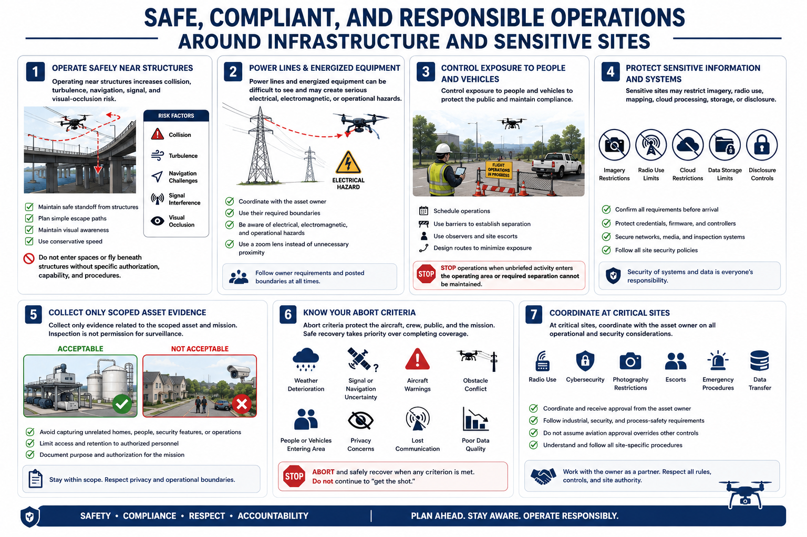

Safety, Privacy, and Risk Controls
Connecting to LMS... Progress: in progress

Narration
Operating near structures increases collision, turbulence, navigation, signal, and visual-occlusion risk. Maintain safe standoff, simple escape paths, visual awareness, and conservative speed. Do not enter spaces or fly beneath structures without specific authorization, capability, and procedures.
Power lines and energized equipment can be difficult to see and may create serious electrical, electromagnetic, or operational hazards. Coordinate with the asset owner and use their required boundaries. A zoom lens is safer than unnecessary proximity.
Control exposure to people and vehicles through scheduling, barriers, observers, site escorts, and route design. Stop when unbriefed activity enters the operating area or the crew can no longer maintain required separation.
Sensitive sites may restrict imagery, radio use, mapping, cloud processing, storage, or disclosure. Confirm requirements before arrival. Protect credentials, firmware, controllers, networks, media, and inspection systems.
Collect only scoped asset evidence. Avoid unrelated homes, people, security features, or operations. Limit access and retention, and document purpose and authorization. Inspection is not permission for surveillance.
Abort criteria include weather deterioration, signal or navigation uncertainty, aircraft warnings, obstacle conflict, people or vehicles entering the area, privacy concerns, lost communication, or poor data quality. Safe recovery takes priority over completing coverage.
At critical sites, coordinate radio use, cybersecurity, photography restrictions, escorts, emergency procedures, and data transfer with the owner. Do not assume an aviation approval overrides industrial, security, or process-safety controls.